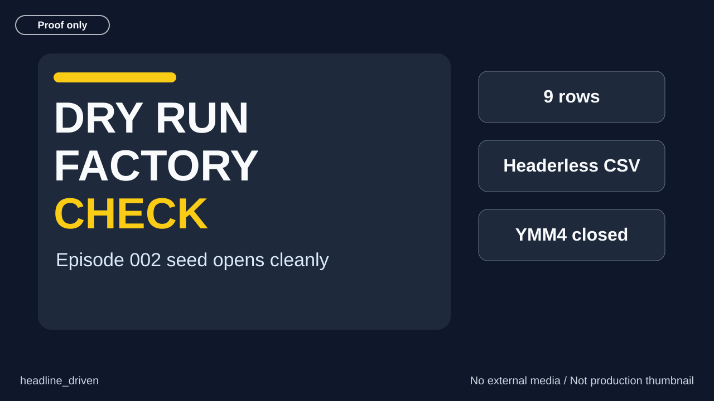
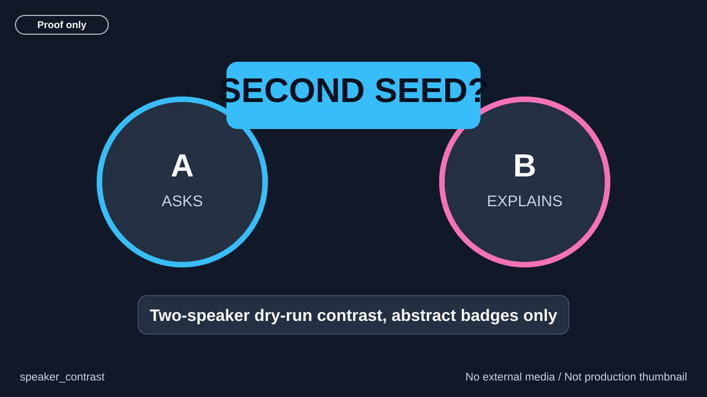
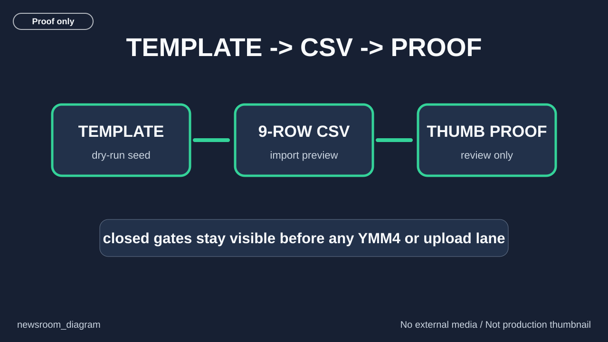

headline_driven
DRY RUN FACTORY CHECK
recommended
Whether the dry-run factory proof is understandable before any character framing.
Factory seed dry-run placeholder for a second yukkuri newsroom episode. Three local SVG thumbnail directions are shown below. Recommended variant: headline_driven, because it is the clearest small-size proof and does not hide the dry-run boundary.


